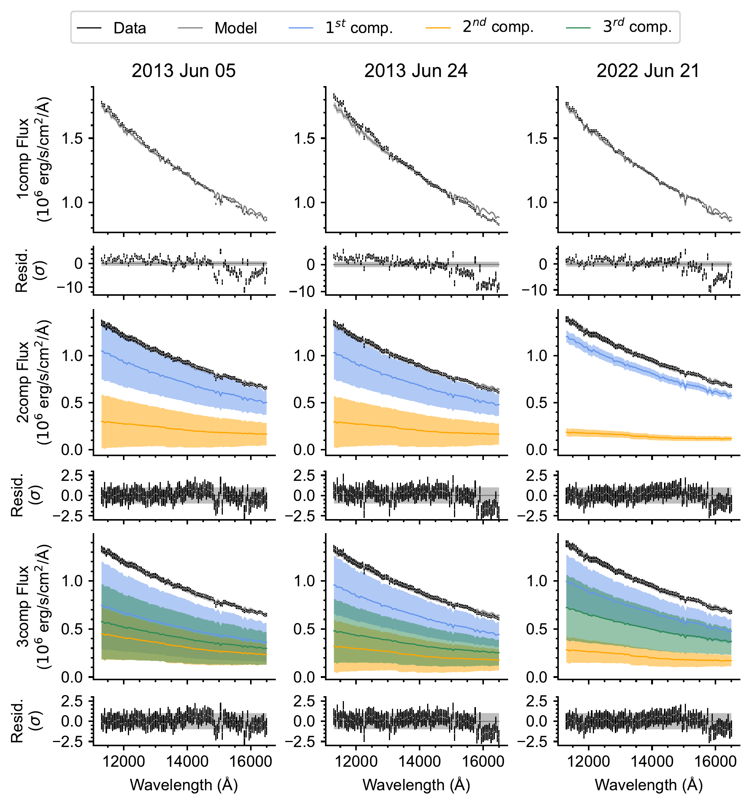
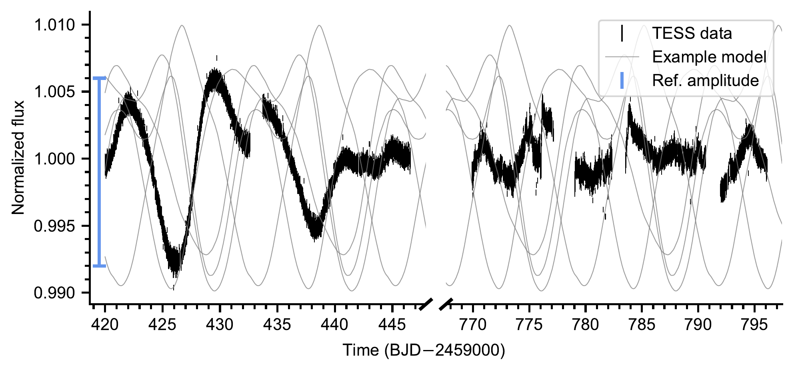
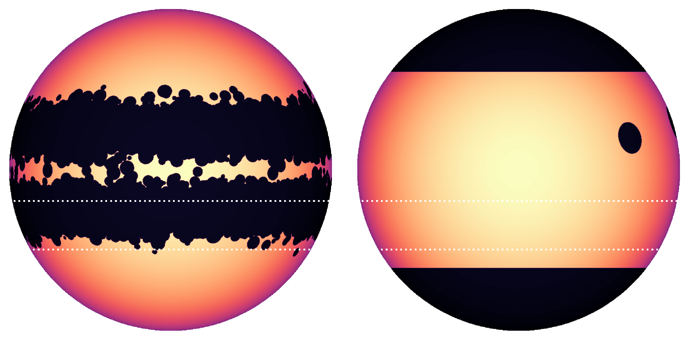
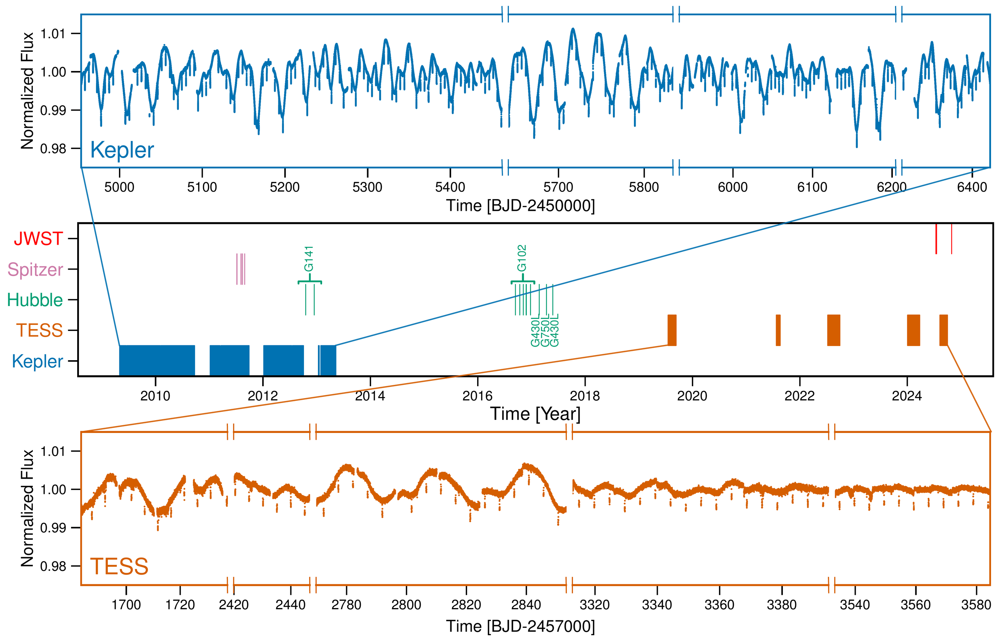
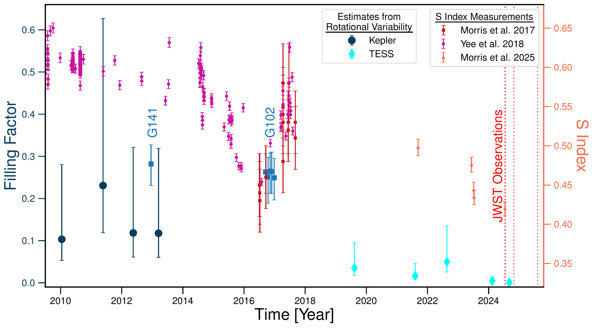
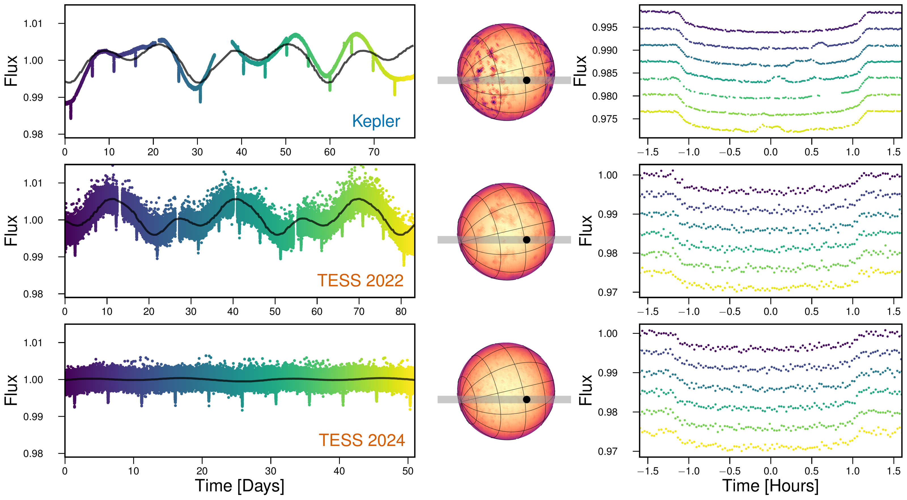

HST Legacy Archival Program Constraining Stellar Contamination in Transmission Spectroscopy
The HST Stellar Treasure Trove is a large effort to uniformly reprocess archival Hubble Space Telescope time-series spectroscopy of transiting exoplanets and quantify stellar and planetary signals in transmission spectra.
Grant: HST AR 17551 • Last updated: —
Spatially heterogeneous stellar photospheres (spots, faculae, and other active regions) imprint wavelength-dependent signals on measured transit depths. These stellar spectral imprints can bias inferred planetary radii, slopes, and molecular abundances—especially for planets orbiting active K and M dwarfs.
By leveraging the breadth of archival HST transit observations, the Stellar Treasure Trove provides uniform reductions and stellar-contamination constraints, enabling robust comparisons across targets and instruments and supporting interpretation of JWST spectra and future atmospheric surveys.
Quantify the impact of unocculted and occulted heterogeneity on transmission spectra, and provide contamination-aware products designed for downstream atmospheric inference.
Apply consistent reduction and modeling assumptions across a broad sample of HST time-series observations, producing a coherent library for population-level analysis.
Provide constraints and priors that inform JWST interpretation and guide observing strategies for characterizing small planets around active stars.
The HST Stellar Treasure Trove comprises 13,271 exposures of 16 transiting-planet host stars spanning effective temperatures from 2,566 to 6,776 K. The archive includes time-series spectroscopy from six STIS and WFC3 observing modes, providing broad optical-to-near-infrared coverage across M, K, G, and F host stars.
| Target | Spectral Type | STIS/CCD (orbits) | WFC3/UVIS (orbits) | WFC3/IR (orbits) |
|---|---|---|---|---|
| WASP-121 | F3V | G430L (11) · G750L (5) | — | G102 (10) · G141 (62) |
| WASP-17 | F5V | G430L (11) · G750L (5) | G280 (5) | G102 (10) · G141 (10) |
| WASP-12 | F8V | G430L (15) · G750L (5) | — | G102 (16) · G141 (58) |
| WASP-19 | G8V | G430L (8) · G750L (4) | — | G141 (25) |
| WASP-39 | G9V | G430L (10) · G750L (5) | G280 (20) | G102 (5) · G141 (10) |
| 55 Cancri | K0V | G430L (22) · G750L (21) | — | G141 (24) |
| HAT-P-26 | K2V | G430L (11) · G750L (5) | G280 (16) | G102 (5) · G141 (10) |
| HD 189733 | K2V | G430L (35) · G750M (28) | — | G141 (30) |
| HAT-P-11 | K3V | G430L (10) · G750L (5) | — | G102 (24) · G141 (9) |
| HAT-P-12 | K4V | G430L (9) · G750L (4) | G280 (15) | G141 (11) |
| K2-3 | K9V | — | — | G141 (42) |
| AU Mic | M1V | G430L (6) · G750L (6) | — | G102 (8) · G141 (8) |
| K2-18 | M2.5V | G430L (1) | — | G141 (45) |
| GJ 436 | M2.5V | G430L (29) · G750L (8) | — | G141 (25) |
| GJ 1214 | M5V | G430L (2) · G750L (4) | — | G141 (77) |
| TRAPPIST-1 | M8V | G430L (1) | — | G141 (43) |
Isaac S. Narrett, Benjamin V. Rackham, and Julien de Wit. 2024. The Astronomical Journal 167, 107
In the first paper from the HST Stellar Treasure Trove program, we show that absolutely calibrated HST/WFC3/G141 stellar spectra can reliably recover the temperatures and full-disk filling factors of distinct photospheric components. For HD 189733 A, the spectra imply that cool spots cover roughly 40% of the visible disk—far more spottedness than the modest rotational modulation measured by TESS might suggest. The two measurements are reconciled if much of the spot coverage is distributed approximately axisymmetrically, such as within densely populated latitude bands or near polar regions. This establishes HST stellar spectra as a direct probe of disk-integrated photospheric heterogeneity while showing why rotational variability alone can substantially understate total spot coverage.



Prajwal Niraula, Benjamin V. Rackham, Julien de Wit, Daniel Apai, Mark S. Giampapa, David Berardo, and Chia-Lung Lin. 2026. The Astronomical Journal 172, 112
HD 189733 A established that HST stellar spectra can recover full-disk photospheric heterogeneity even when rotational variability reveals only part of the activity pattern. HAT-P-11 extends that approach across an unusually rich temporal baseline. Combining Kepler and TESS light curves with HST-derived spot filling factors and ground-based Ca II H&K measurements reveals strong long-term evolution: HAT-P-11 was highly active during the Kepler era, then became substantially quieter by the mid-2020s. That relatively quiet state coincided with JWST observations in 2024 and 2025, providing particularly favorable windows for atmospheric characterization of HAT-P-11 b.


